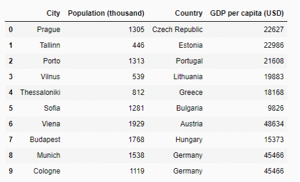
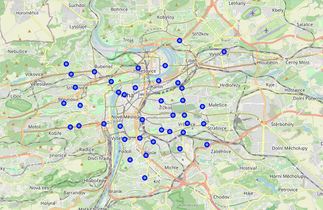
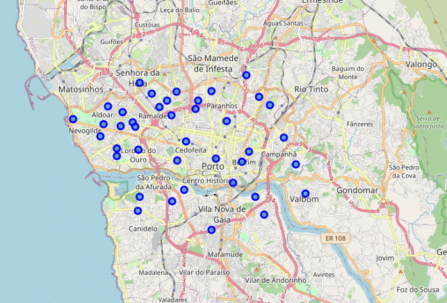
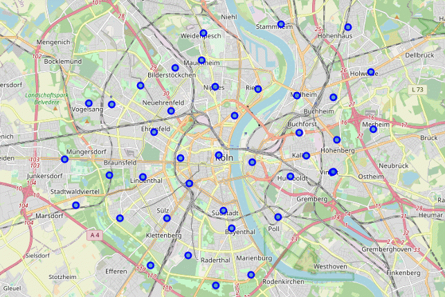

Data
We will answer our questions using the Google Places location data (I was unable to set up a Foursquare developer account, so I had to use Google instead)
As a first step we will choose a couple of cities for comparison. Based on the information from wikipedia we can select several European cities. Some of them are significantly smaller or larger than Prague, others may be of similar size but located in countries with much higher or lower GDP (see the table below)

We will take the following approach:
choose one city of similar size (population) from a country with a similar income: Porto from Portugal
choose another city of a comparable size from a 'richer' country: Cologne from Germany. Cologne also has another similarity with Prague - it's a cultural center and a popular tourist destination.
We will then work with the Google Places API to locate dental clinics in those cities .
We will have to limit our search by the central part of each city, so we will select 40 central districts in each city.
Here is the example of how it will look for Prague

The selected Porto districts are mapped below

Cologne central part map

So, now we have 40 central districts mapped for each city. We will then search for dental clinics around these locations using the Google API